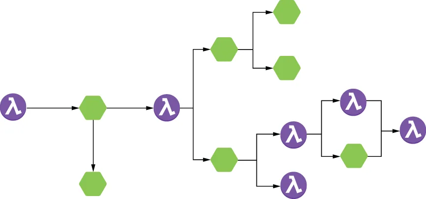
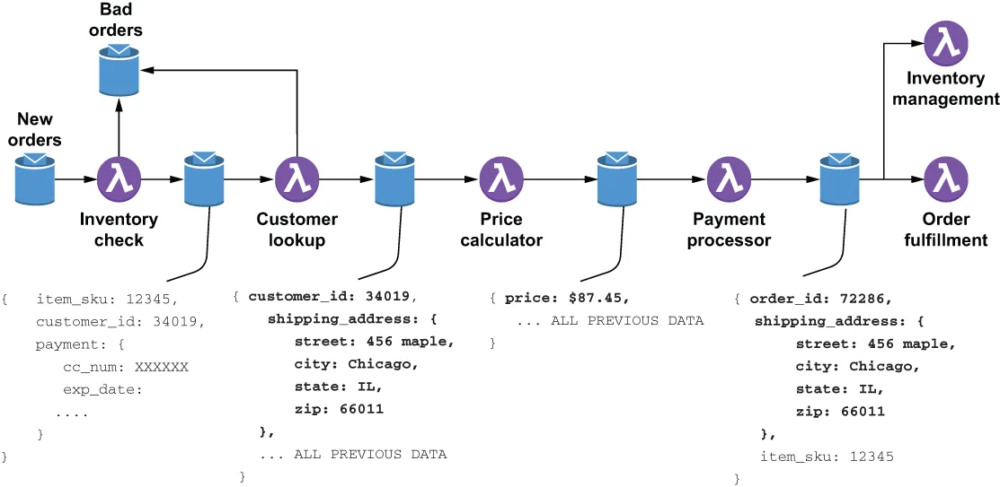

In contrast, dataflow programming focuses on the movement of data through a series of independent data processing functions that are connected via explicitly defined inputs and outputs. These predefined sequences of operations are commonly referred to as data pipelines and are what your Pulsar Functions applications should be modelled as. Here the focus is on moving the data through a series of stages, each of which processes the data and produces a new output. Each processing stage in a data pipeline should be able perform its processing based solely on the content of the incoming message. This eliminates any processing dependencies and allows each function to execute as soon as data is available.
相比之下，数据流编程关注的是数据如何在一系列相互独立的数据处理函数之间流动，这些函数通过显式定义的输入和输出连接在一起。这类预先定义好的操作序列通常被称为数据流水线，而你的 Pulsar Functions 应用就应当照这个样子来建模。这里的重点是把数据送过一系列阶段，每个阶段都对数据做处理并产出一个新的输出。数据流水线中的每个处理阶段，都应当能够仅凭传入消息的内容就完成自己的处理。这消除了处理之间的任何依赖，让每个函数都能在数据到达的那一刻立即执行。
A common analogy for a data pipeline is an assembly line in an automobile factory. Rather than assembling a car in one location piece by piece, each car passes through a series of stages during construction. A different piece of the car is added at each stage, but this can be done in parallel rather than sequentially. Consequently, multiple cars can be assembled in parallel, effectively increasing the throughput of the factory.
关于数据流水线，一个常见的类比是汽车工厂里的装配线。汽车不是在同一个位置上逐个零件地装配起来的，而是在制造过程中依次经过一系列阶段。每个阶段为汽车加上一个不同的零件，但这些操作可以并行进行，而不必串行。因此，多辆汽车可以同时并行装配，有效地提高了工厂的吞吐量。
Pulsar Functions-based applications should be designed as topologies consisting of several individual Pulsar functions that perform the data processing operations and are connected together via Pulsar input and output topics. These topologies can be thought of as directed acyclic graphs (DAGs) with the functions/microservices acting as the processing units and the edges representing the input/out topic pairings used to direct data from one function to another, as shown in figure 8.1.
基于 Pulsar Functions 的应用应当被设计成这样的拓扑结构：由若干各自独立的 Pulsar 函数组成，它们执行数据处理操作，并通过 Pulsar 的输入和输出主题连接在一起。这些拓扑可以被视为有向无环图（DAG）——其中各个函数/微服务充当处理单元，而边则代表用于把数据从一个函数引向另一个函数的输入/输出主题配对，如图 8.1 所示。

Figure 8.1 A Pulsar application is best represented as a data pipeline through which data flows from left to right through the functions and microservices to implement the business logic in a series of steps.
图 8.1 一个 Pulsar 应用最好被表示为一条数据流水线：数据自左向右流经各个函数和微服务，在一系列步骤中实现业务逻辑。
The data pipeline acts as a distributed processing framework where each function inside the data pipeline is an independent processing unit that can execute as soon as the next input arrives. Additionally, these loosely coupled components communicate asynchronously with one another, which allows them to operate at their own rates and not be blocked waiting for a response from another component. This, in turn, allows you to have multiple instances of any component running in parallel to provide the necessary throughput you require. Therefore, when you design your application, keep this in mind, as you will want to keep your functions and services as independent as possible to exploit this parallelism if needed. Let’s revisit the order entry use case to demonstrate how you would implement it as a data pipeline similar to the one shown in figure 8.2. As the term dataflow implies, it is best to focus on the flow of data shown along the bottom of the figure.
这条数据流水线充当了一个分布式处理框架：其中的每个函数都是一个独立的处理单元，一旦下一个输入到达就能立即执行。此外，这些松耦合的组件彼此之间以异步方式通信，这让它们能够按照各自的节奏运行，而不必阻塞等待另一个组件的响应。这又进一步让你能够并行运行任意组件的多个实例，以提供你所必需的吞吐量。因此，在设计应用时请把这一点记在心里——你会希望让各个函数和服务尽可能保持独立，以便在需要时利用这种并行性。让我们回到订单录入这个用例，演示如何把它实现成一条类似于图 8.2 所示的数据流水线。正如数据流这个词所暗示的，最好把注意力放在图中底部所示的那些数据流动上。

Figure 8.2 The data flow for the order entry use case. As the data flows through the various steps in the process, the original order data is augmented with additional information that will be used in the next step of the process.
图 8.2 订单录入用例的数据流。随着数据流经流程中的各个步骤，原始订单数据会被不断补充上新的信息，而这些信息将在流程的下一步中被用到。
As you can see, each step in the process passes the original order through along with an additional piece of information that is required in the subsequent step (e.g., the customer ID and shipping address have been added to the message by the customer lookup service). Since all of the data required for the processing at that stage is in the message, each function can execute as soon as the next piece of data arrives.
可以看到，流程中的每一步都会把原始订单连同后续步骤所需的那一项附加信息一起传递下去（例如，客户 ID 和收货地址已由客户查询服务加到了消息中）。由于该阶段处理所需的全部数据都在消息里，每个函数都能在下一条数据到达的那一刻立即执行。
The payment processor removes the payment information from the message and publishes messages containing the newly generated order ID, the shipping address, and the item SKU. Multiple functions are consuming these messages; the inventory management function uses the SKU to decrease the item count from the available inventory, while the order fulfillment function needs the SKU and the shipping address to send the item to the customer. Hopefully, this gives you a better idea of how Pulsar Functions-based applications should be designed and modelled before we jump into some of the more advanced design patterns in the next section.
支付处理器把支付信息从消息中移除，并发布出包含新生成订单 ID、收货地址和商品 SKU 的消息。有多个函数正在消费这些消息：库存管理函数用 SKU 去减少可用库存中的商品数量，而订单履约函数则需要 SKU 和收货地址，以便把商品发给客户。希望这能让你对基于 Pulsar Functions 的应用该如何设计与建模有一个更好的认识——接下来我们就要进入下一节中那些更高级的设计模式了。